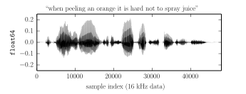
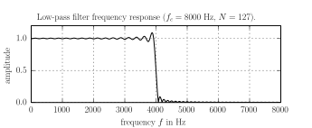
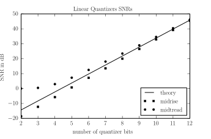
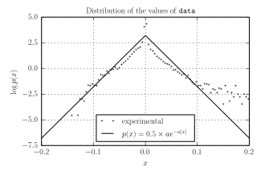

This work is licensed under a Creative Commons Attribution 3.0 Unported License (CC BY 3.0). You are free to share -- to copy, distribute and transmit the work -- and to remix -- to adapt the work -- under the condition that the work is properly attributed to its author.
This lab session investigates two lossy compression methods:
subsampling (or downsampling),
nonlinear (scalar) quantization.
This combination of methods is used in the context of speech compression, for example in the G.711 ITU-T 1972 standard for "Pulse Code Modulation (PCM) of Voice Frequencies" that encodes data at a 64 kbits/s bit rate. In this lab session we design a compression scheme, applicable to 256 kbit/s (16-bit, 16 kHz) audio data, that relies on these two methods and also achieves a 64 kbit/sec output bit rate.
The TIMIT corpus is a collection of read speech data with time-aligned phonetic and word information about utterances that are stored as 16-bit wide band audio data, i.e. sampled at 16 kHz. A subset of this corpus is available Natural Language Toolkit (NLTK) Python library. All utterances of the database can be listed:
>>> from audio.index import *
>>> utterances = search(type=Utterance)
>>> utterances
0. a crab challenged me but a quick stab vanquished him
1. a screwdriver is made from vodka and orange juice
...
158. would a tomboy often play outdoors
159. you always come up with pathological examplesThe audio data of an utterance is the audio attribute:
>>> utterance = utterances[152]
>>> data = utterance.audioIt is an array of floating-points numbers in \([-1.0, +1.0]\), obtained from the original 16-bit signed integers by a scaling of \(2^{-15}\).

The TIMIT audio data has been sampled at the frequency of 16 kHz, in order to describe the audio content up to 8 kHz. In the context of voice data, this is considered wide-band, a frequency range large enough to ensure the quality needed for all kinds of applications.
But most of the spoken voice contents are actually in the 30 Hz - 3400 Hz frequency range; this narrow-band is therefore sufficient for many applications where the size of the data matters. We may therefore use a sample rate of 8 kHz instead of 16 kHz, have a two-fold decrease of the audio data size and still capture most of the voice content.
In this section, we generate such narrow-band data from wide-band data.
Select an utterance from the TIMIT index and listen to it. Drop every other value from its audio data array and save the result as a 8 kHz WAVE file. Listen to it, assess its quality and explain it.
Compute the frequency response of a perfect low-pass filter with a sample rate of \(f=16\) kHz and a cutoff frequency \(f_c = 4\) kHz. Truncate and delay the impulse response of this filter to obtain an approximation that is causal and has a finite impulse response (FIR) of length \(N=127\). Plot the amplitude of its frequency response.
Apply the low-pass filter to the original utterance audio data, then decimate it by a factor of two. Save the result as a 8 kHz WAVE file, listen to it and compare its quality with the audio data from paragraph 1.
Measure the maximal error (in dB) between the perfect filter and its approximation in the pass-band \(0-3400\) Hz and in the stop-band \(4600 - 8000\) Hz (do not take into account the error induced by the delay). Is it good enough ?
Show that increasing the filter length decreases the approximation error. Say that we can allow a maximal delay of 20 ms in the signal processing. Can solve our problem simply be increasing the length of the filter ?
Multiply the FIR impulse responses obtained previously by a selection of some classic windows of appropriate size. Can this approach solve the approximation problem ?
Load the 8 kHz WAVE file obtained at step 3 (or later) of the previous section as an array of floats in the \([-1, +1]\) range. Make sure that the integer \(2^{15}\) has been mapped to the floating-point number \(1.0\). Have we lost any information with this representation 16-bit signed integer data as floating-points ?
Implement a function quantizer_SNR that, given a Quantizer instance quantizer and a one-dimensional floating-point array data, computes the signal-to-noise ratio (in dB) associated to the quantization of data by quantizer.
Compute the power \(P\) (mean square value) of the audio data. What is the theoretical value of the quantization SNR -- under a high resolution assumption -- as a function of the number \(b\) of quantization bits ? Compute the effective quantization SNR for a uniform quantizer on \([-1, 1]\) and \(b=2,3,..., 12\) ; compare with the theory.
Is the value 0 encoded exacly by these midrise quantizers ? Why ? What is the simplest way to design a uniform \(b\)-bit quantizer on \([-1,1]\) that has this property (is midtread) ? Compute the effective quantization SNR for such quantizers and compare with the results of the previous step.
Display the SNR of the previous midrise and midtread quantizer for \(b\) in the \(13-24\) range. What is going on for 16 bits and above ? Why is there such a discrepancy between the experimental measures of the SNR and the theory ?
We say that the quantizer \([\,\cdot\,]_2\) has a higher resolution than the quantizer \([\,\cdot\,]_1\) if any value produced by \([\,\cdot\,]_1\) is encoded without error by \([\,\cdot\,]_2\).
Are our \(b\)-bit midrise and midtread quantizers higher resolution than the 16-bit quantizer used in the WAVE format when \(b \geq 16\) ?
Design a family of uniform quantizers, indexed by the number of allocated bits \(b\), such that:
Compute the effective quantization SNR for such quantizers and compare with the previous experimental results.
Quantize the data with the (8-bit, nonlinear) \(\mu\)-law quantizer. What is the corresponding SNR ? How many bits would be required to achieve the same precision with a uniform quantizer ? Show that the 16-bit linear quantizer is higher-resolution than the \(\mu\)-law quantizer.
Create an histogram of the values \(x\) of data and find a parameter \(a\) such that the probability density proportional to \(\exp -a |x|\) is a decent approximation of the repartion of the data.
Implement the nonlinear quantizer that is optimal w.r.t. this probability law. Compute its SNR and compare with the \(\mu\)-law.
